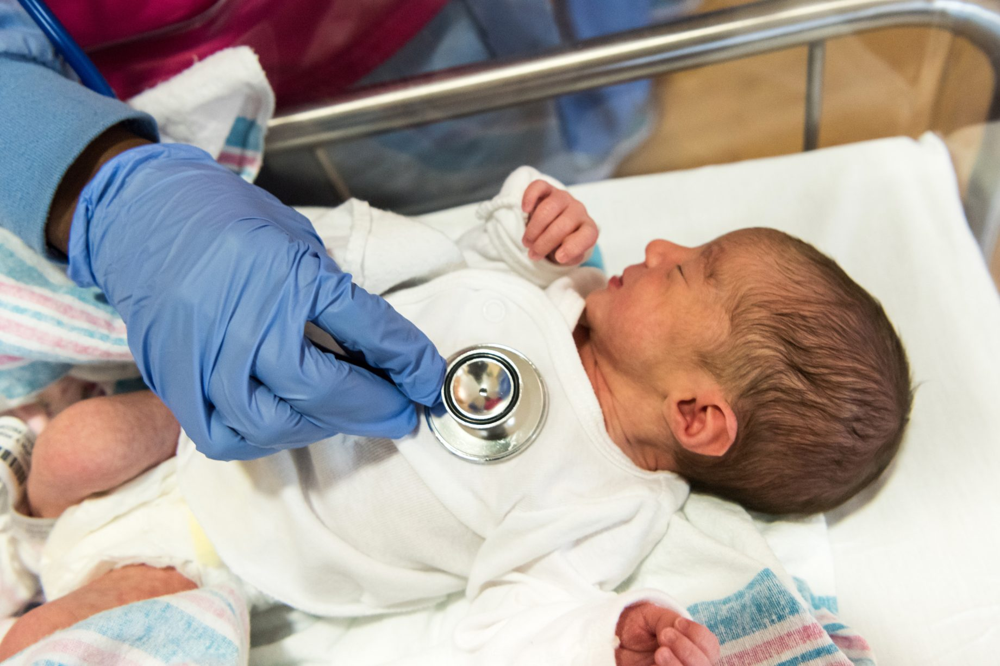

Two professions.
Two registers. One team.
Nursing and midwifery are separate professions here, with separate councils — and midwifery leads maternity care in a way that surprises most clinicians arriving from other systems.
We are not recruiting nurses or midwives at the moment
The large healthcare organisations we work with recruit overseas nurses and midwives when demand outstrips what they can fill from within New Zealand. In these two professions, at the moment, it does not. So there are no vacancies here to show you — and we would rather say that in the second sentence than after you have sent a CV.
That is a statement about this year, not about the professions. It can turn on a single service’s recruitment round, and when it does, this page will say so. Everything below is here because the decision about whether to come is worth making properly either way.
Help you work out whether to come at all
The registration route for your scope, how the maternity model actually works, what the visa asks of you, what the towns cost and what a realistic timeline looks like — the same guidance every profession on this site gets, free, with nothing attached to it.
Advertise roles we do not have
We will not list nursing or midwifery vacancies we are not recruiting for, and we will not take your CV against a someday. Register your interest and we will tell you if this changes, rather than market to you in the meantime.
Which of these are you?
Two councils, several scopes, separate applications — and the route is different for each. Start here and the pathway checker gives you the likely one for yours in about two minutes.
Registered nurses
The Nursing Council assesses your qualification, registration history and recent practice — the checker maps the route.
Nursing Council of New ZealandMidwives
A separate profession and a separate register — assessed on its own, even if you hold dual registration elsewhere.
Midwifery Council of New ZealandNurse practitioners & advanced practice
Advanced scopes are assessed individually — tell us what you hold and we will point you at the right door.
Nursing Council of New ZealandMental health nurses
Your team and your settings are explained with the mental health family — the register is the same Nursing Council.
With the mental health familyAnother nursing role
Healthcare assistants, nurse educators, quality and leadership roles. Tell us what you hold.
Tell us what you holdNursing is not one job — and not one registration pathway
“Nurse” covers several scopes of practice here, each with its own entry on the register. Midwifery is not one of them: it is its own profession, its own degree and its own council.
Registered nurses
The core of every ward, clinic and community team — the largest workforce in the health system.
Nurse practitioners
Advanced scope with prescribing and independent caseloads — a growing route, especially rurally.
Specialty nursing
Theatre, ICU, emergency, mental health, oncology — the specialty shapes the week more than the title.
Midwives
Lead maternity carers in their own right, in a midwife-led model — not a nursing specialty.
Midwifery works differently here
Most New Zealand births are led by a midwife rather than an obstetrician. A Lead Maternity Carer holds the whole episode — booking, pregnancy, birth and the weeks after it — with obstetric teams involved when there is a clinical reason for them to be.
If you are a midwife, that means more autonomy and more continuity than most systems offer, and a caseload you carry rather than a shift you hand over. It also means being the person the decision rests with at three in the morning, which is worth thinking about honestly before you move for it. If you hold both nursing and midwifery registration elsewhere, the two are assessed separately here.

Nursing here does not have to mean a hospital ward
Hospital wards are the visible part. A large share of nursing happens in primary care, in homes, in schools and in aged care — and midwifery happens wherever the whānau is.
Hospital services
The acute core, on collective-agreement terms.
Wards & acute care
Medical, surgical and specialty wards, with the staffing ratios and after-hours reality worth asking about per site.
Critical care & emergency
ICU, HDU and ED — specialty experience employers ask for specifically.
Theatre & perioperative
Scrub, circulating, anaesthetic and recovery nursing — explained properly with the theatre family.
Maternity units
Hospital midwifery, obstetric wards and neonatal care alongside the community LMC model.
Community & primary
Where the system is deliberately moving more care.
Primary care & practice nursing
General practice clinics with broad scopes — triage, long-term conditions, immunisation, minor care.
District & community nursing
Home-based care, wound care, palliative support — you drive, and you see how people actually live.
Community midwifery
LMC caseloads through pregnancy, birth and the postnatal weeks — continuity as the model, not the exception.
Māori & Pacific health providers
Kaupapa Māori and Pacific services, with whānau at the centre of the model.
Beyond the hospital
Careers that look nothing like a ward roster.
Aged care
Residential and community aged care — where demand is growing fastest, and where many overseas nurses start.
Mental health nursing
Community and inpatient teams — explained properly with the mental health family.
Schools, occupational & public health
School nursing, workplace health, screening and population programmes.
Rural nursing
Broad scope, real autonomy, and being the health service for a community — the widest version of the job.
Public hospital services
Collective-agreement pay and conditions, the full multidisciplinary system, and most of the acute work.
Aged care, primary & NGOs
Different employers, different agreements, often different pay. Public or private is not the same job with a different employer — ask which agreement covers a role before comparing offers.
What applies across nursing & midwifery
The things that are the same whichever scope you hold.
Who regulates this work?
Nurses register with the Nursing Council of New Zealand, where registered nurse and nurse practitioner are separate scopes with separate requirements. Midwives register with the Midwifery Council of New Zealand, as a separate profession with its own application, even if your home country treats midwifery as a nursing specialty.
Registration is the first gate, and it runs on its own timeline. How registration works · Check your pathway
What does the pay look like?
Public-system pay is set by collective agreement rather than negotiated role by role, so your base salary comes from a national scale rather than a negotiation with the hospital. Your step on that scale, your hours and your on-call commitment are what actually vary. Aged care, primary care and private employers sit on different agreements — which is why two offers with the same title can differ, and why the agreement is the first thing to ask about.
Which visa would I need?
Most clinicians move on a work visa tied to an accredited employer. Registered nurses and midwives have sat on the Green List, which changes the route to residence considerably — but not every nursing scope has, and the list is reviewed by Immigration New Zealand and does change. Check the current one against your own scope rather than against “nursing” in general, and ask us if it is not clear.
The visa can usually run in parallel with registration rather than after it. Visas and residence
What about the rest of the move?
Schools, housing, healthcare, banking, shipping and the first few weeks are the same for every profession, so we explain them once rather than on each page.
Guides · resources — the practical side, in order.
Where to look while we are not recruiting
We are not going to send you to a vacancy list we do not have. What we can do is make sure you are not applying for anything before you know what your registration actually requires — which is the part that costs people money.
Public hospital vacancies in New Zealand are advertised directly by the services themselves, and applying to them does not need an agency. If you would rather know first whether the move stacks up at all, start with the pathway checker and the cost calculator.
Weighing up the move anyway?
Placement or no placement, the guidance is yours. Tell us what you hold and where you trained, and we will give you an honest read before you spend money on anything.